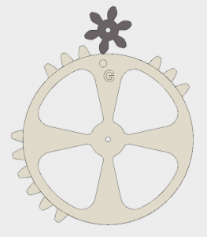
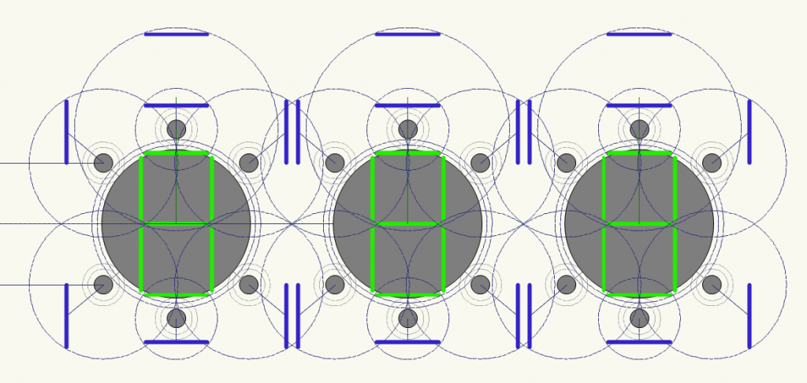

Geared 7-Segment Display - Part 2, More Gears
While time at home is scarce this week, I've stolen a couple moments late night to continue working on the design of the geared 7-segment display, including finishing the modelling of the 7 drive gears.
Each drive gear is based on a 30-tooth, involute gear of module 4. Each segment of 3 adjacent teeth represents a single transition of a segment (or lack there of) - if there are teeth in a segment, the associated arm gear will rotate, changing a segment from active to inactive for a given transition or vice versa.

As a side note, each gear has a even number of teeth remaining, and each segment makes an even number of transitions as the display makes a full cycle of ten digits. If a segment made an odd number of transitions, it would start the next "cycle" in a different state than on the previous cycle, causing the numbers to "look" different on each time a given number came up, which is clearly wrong. This served as a useful sanity check as I was working through each gear in turn.
Here is the mechanism in its current Fusion360 form (support plates, arms and mounts, and a drive mechanism yet to come):

The A, D, and G arm gears lie on the vertical axis of the mechanism. The A and G arm gears, as noted in my previous post, are currently intended to be co-axial, the shaft of the A segment being a small hollow tube which completely surrounds the shaft of the G segment. Of all the details in this mechanism, this one seems the most fiddly at the moment, since any tolerance issues are going to compound on each other.
The B, C, E, and F arm gears lie at ±50° from the vertical axis, which is just about as close to the vertical axis as they can be and still have their arms clear the axes of the A/D/G segments.
In contrast to what I said a the end of my last post, I'm thinking I'll print each of the gears individually and then mount them on the center axle with spacer washers. The whole-gear-assembly-as-barrel has one fatal flaw: printability. That's a lot of overhanging teeth to worry about. That said, the print-individual-gears approach means needing to worry about registering adjacent gears to each other, but that seems like a solvable problem.
Looking down the road, here's a quick Vectorworks sketch of how close adjacent digit displays could be. It seems I could squeeze them to about 175mm (~7 inch) centers.

Currently, the plan is to build one digit and evaluate... but the only thing better than N mechanisms is N+1 mechanisms...